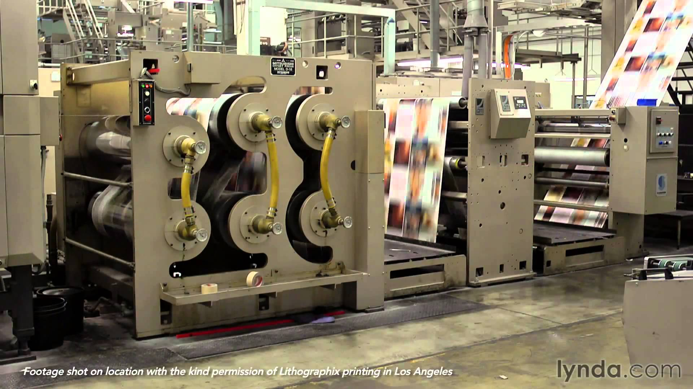
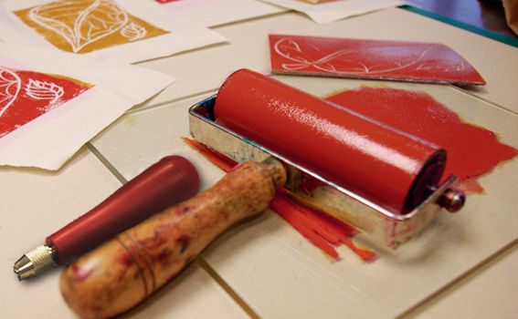
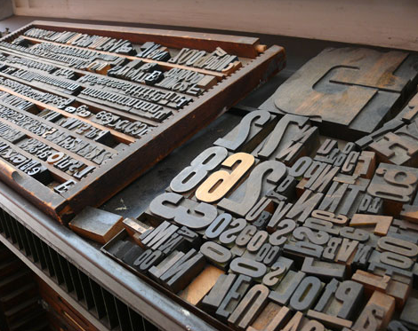

Key Words
Woodblock printing
:a technique for printing text, images or patterns used widely throughout East Asia and originating in China in antiquity as a method of printing on textiles and later paper. Woodblock manufacturers
: Companies that specifically use woodblock printing.Block printing inks
: Type of paint used for block printing. Can be water or oil based.Printing environmental issues or concerns
Using too many trees is bad for the planet, and the emissions laser printers give off is bad for the ozone. Letterpress proof printer:
Method of printing from raised surfaces, either metal type or plates whose surfaces have been etched away from image areas. Also called block printing.Illustrator: spot colors:
One ink or varnish applied to portions of a sheet, as compared to flood or painted sheet.Color separation techniques (manual and automatic)
: Usually in the four-color process arena, separate film holding qimages of one specific color per piece of film. Black, Cyan, Magenta and Yellow. Can also separate specific PMS colors through film.Types of paper and vendors
: There are different types of paper and paper vendorsPrinting halftone process/history
: (1) To photograph or scan a continuous tone image to convert the image into halftone dots. (2) A photograph or continuous-tone illustration that has been halftoned and appears on film, paper, printing plate or the final printed product.
Key Words Cont.
Halftone screen angles
:Piece of film or glass containing a grid of lines that breaks light into dots. Also called contact screen and screen. Printing ink order
: The order of the ink is based on pantone spot colors Pointillism & theory
: pointillism is more focused on the specific style of brushwork used to apply the paintPrint color separations
: To reproduce color and continuous-tone images, printers usually separate artwork into four plates (called process colors)—one plate for each of the cyan, magenta, yellow, and black portions of the image.Photoshop:Halftone effect
:When using Photoshop, there are multiple ways to arrive at the “Xerox” effect of an image. Made up of tiny dots.Photoshop: viewing, saving and printing channels
: How to view save and print channelsOld printer’s job “stripping” of mechanicals
:film negatives for printed pages are arranged to create printing plates



No Sketches